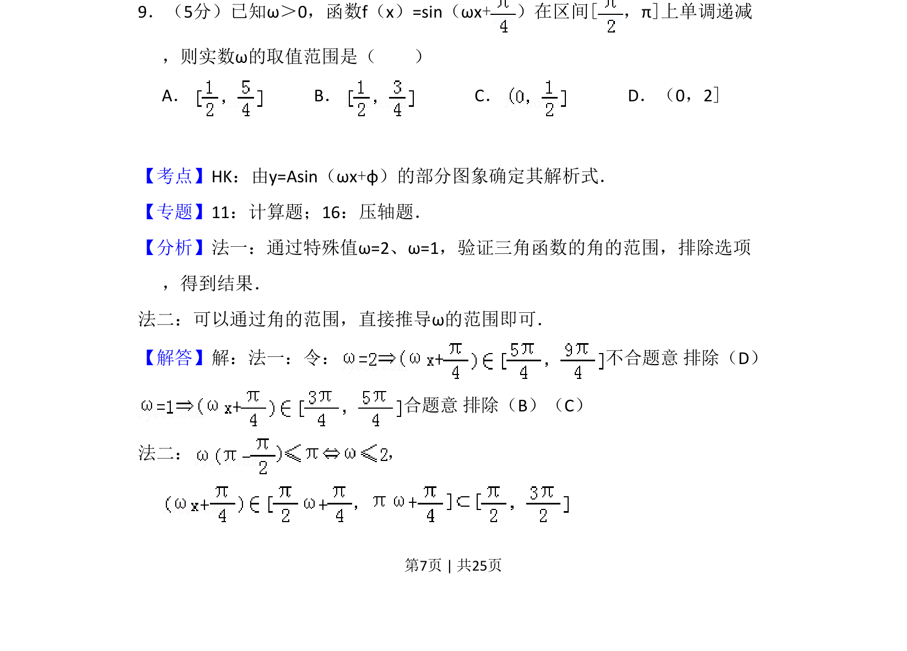
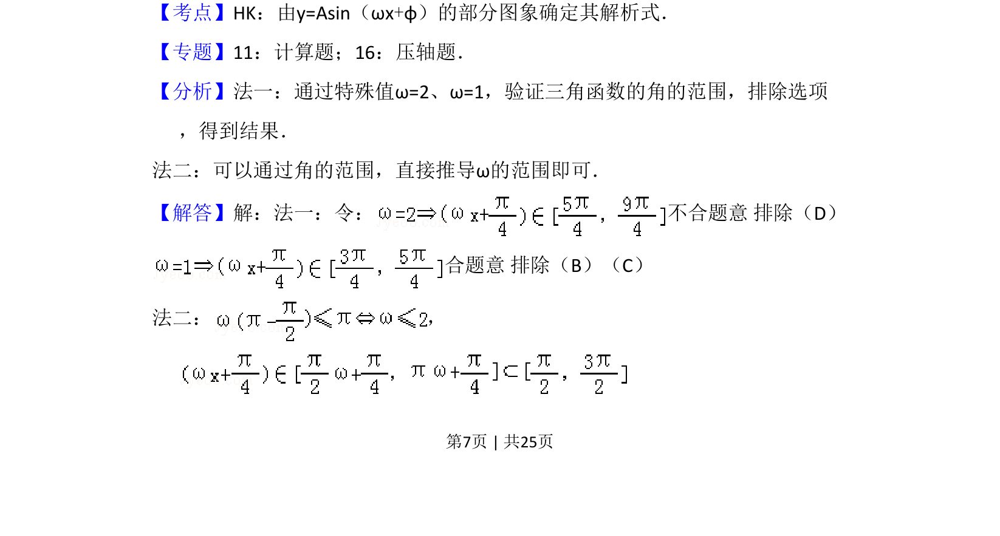
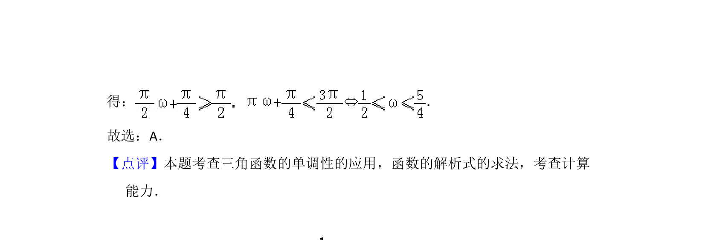

考点：正弦函数的单调性 由图象求解析式 参数取值范围

本题考查正弦型函数在给定区间内的单调性，通过单调递减条件求参数ω的取值范围。


📄 原 PDF 第 7 页：
素材/真题/吉林/2008-2024·（吉林）数学高考真题/2012年高考数学试卷（理）（新课标）（解析卷）.pdf
9．（5分）已知ω＞0，函数f（x）=sin（ωx+）在区间[，π]上单调递减 ，则实数ω的取值范围是（ ） A．B．C．D．（0，2]
【考点】HK：由y=Asin（ωx+φ）的部分图象确定其解析式．菁优网版权所有 【专题】11：计算题；16：压轴题． 【分析】法一：通过特殊值ω=2、ω=1，验证三角函数的角的范围，排除选项 ，得到结果． 法二：可以通过角的范围，直接推导ω的范围即可． 【解答】解：法一：令： 不合题意 排除（D） 合题意 排除（B）（C） 法二： ，